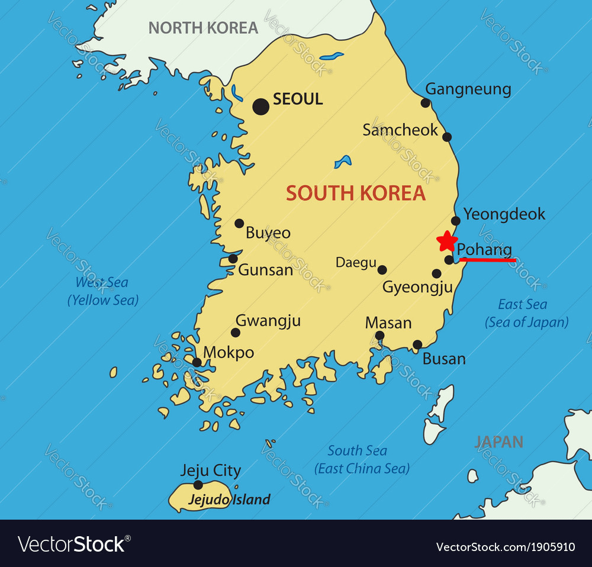
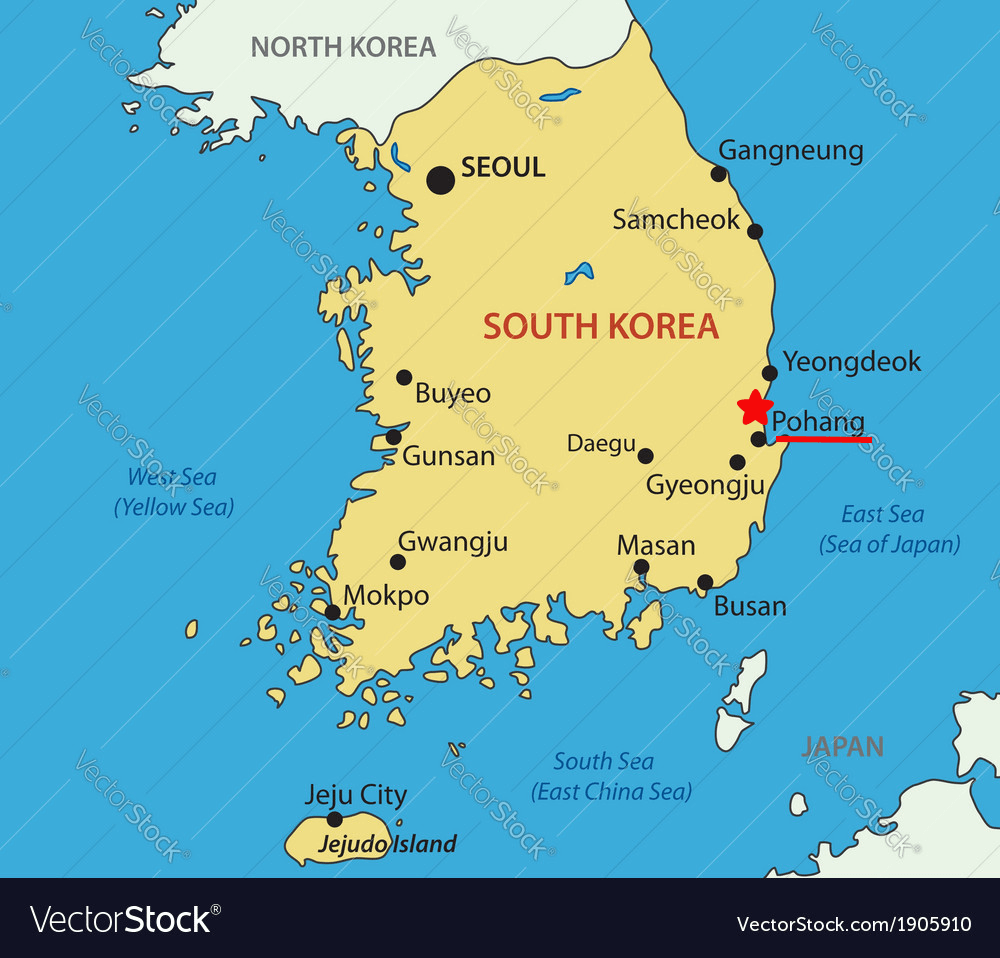

浦項(ポハン)の紹介
- 浦項は韓国のどこにある？
韓国の東南部にあります。観光地で有名な釜山の近くです。
- 浦項の有名なところ
浦項はYeongildaeという海水浴場が有名です。夜に行くともっときれいです。

2旅行
アメリカ-ニューヨーク
ロシア-ウラジオストク

台湾-台北


韓国の東南部にあります。観光地で有名な釜山の近くです。
浦項はYeongildaeという海水浴場が有名です。夜に行くともっときれいです。
アメリカ-ニューヨーク
ロシア-ウラジオストク
台湾-台北